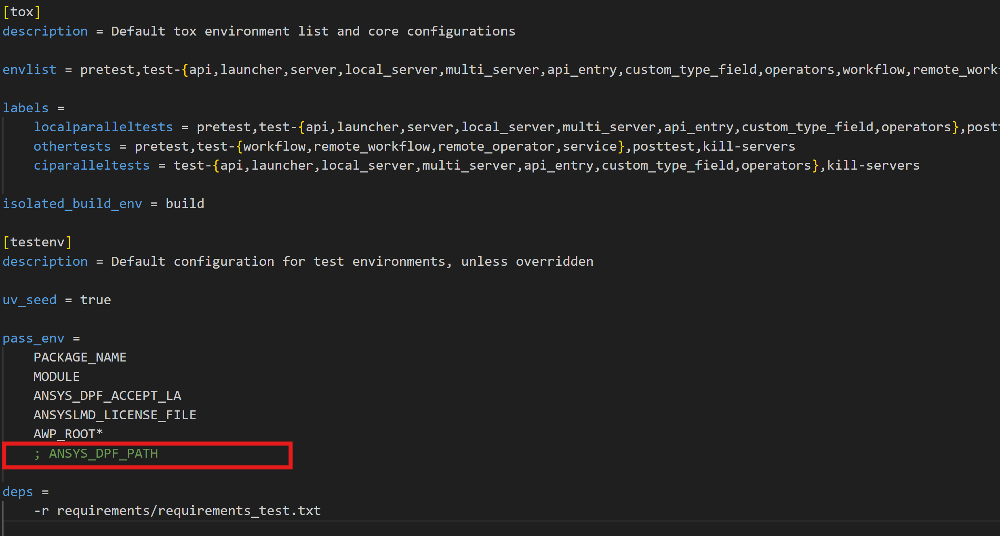

Contributing as a developer#
Download your own copy in your local machine.
Install the project in editable mode.
Verify your changes by testing the project.
Clone the repository#
Clone the latest version of PyDPF-Core in development mode by running this code:
git clone https://github.com/ansys/pydpf-core
Install for developers#
Installing PyDPF-Core in development mode allows you to perform changes to the code and see the changes reflected in your environment without having to reinstall the library every time you make a change.
Virtual environment#
Start by navigating to the project’s root directory by running:
cd pydpf-core
Then, create a new virtual environment named .venv to isolate your system’s
Python environment by running:
python -m venv .venv
Finally, activate this environment by running:
.venv\Scripts\activate.bat
.venv\Scripts\Activate.ps1
source .venv/bin/activate
Development mode#
Now, install PyDPF-Core in editable mode by running:
python -m pip install --editable .
Verify the installation by checking the version of the library:
from ansys.dpf.core import __version__
print(f"PyDPF-Core version is {__version__}")
>>> PyDPF-Core version is 0.13.9.dev0
Install Tox#
Once the project is installed, you can install Tox. This is a cross-platform automation tool. The main advantage of Tox is that it eases routine tasks like project testing, documentation generation, and wheel building in separate and isolated Python virtual environments. To install Tox, run:
python -m pip install tox tox-uv
Finally, verify the installation by listing all the different environments (automation rules) for PyDPF-Core:
python -m tox list
Default Tox environments
Environment |
Description |
|---|---|
pretest |
Environment to organize test files prior to testing |
test-api |
Environment for running api tests |
test-launcher |
Environment for running launcher tests |
test-server |
Environment for running server tests |
test-local_server |
Environment for running local server tests |
test-multi_server |
Environment for running multiple server tests |
test-api_entry |
Environment for running api entry tests |
test-custom_type_field |
Environment for running custom-type field tests |
test-operators |
Environment for running operators tests |
test-workflow |
Environment for running workflow tests |
test-remote_workflow |
Environment for running remote workflow tests |
test-remote_operator |
Environment for running remote operator tests |
test-service |
Environment for running service tests |
posttest |
Environment to revert test files to original state after testing |
kill-servers |
Environment for clearing running servers |
build-wheel |
Environment for custom build of package wheels |
covreport |
Environment for combining coverage reports |
doc-clean |
Environment for cleaning previously generated html documentation |
doc-links |
Environment for verifying the integrity of external links within the documentation |
doc-html |
Environment for html documentation generation |
Run the tests#
Once you have made your changes, you can run the tests to verify that your modifications did not break the project. PyDPF-Core tests are organized into groups and require additional steps during execution to ensure tests run as expected without errors, therefore, PyDPF-Core tox configuration supports different markers to account for this. These markers are associated with a dedicated Tox environment. To also allow flexibity required during development, different DPF Server installation can also be used as explained in the subsections that follow.
Unified DPF Server installation or specific DPF Server installation using ANSYS_DPF_PATH environment variable#
These two installation DPF Server installation methods i.e. (unified or via ANSYS_DPF_PATH) require no special handling. Individual test groups can be simply run with the following commands:
Testing individual groups
Environment |
Command |
|---|---|
test-api |
python -m tox -e pretest,test-api ,posttest,kill-servers |
test-launcher |
python -m tox -e pretest,test-launcher ,posttest,kill-servers |
test-server |
python -m tox -e pretest,test-server ,posttest,kill-servers |
test-local_server |
python -m tox -e pretest,test-local_server ,posttest,kill-servers |
test-multi_server |
python -m tox -e pretest,test-multi_server ,posttest,kill-servers |
test-api_entry |
python -m tox -e pretest,test-api_entry ,posttest,kill-servers |
test-custom_type_field |
python -m tox -e pretest,test-custom_type_field ,posttest,kill-servers |
test-operators |
python -m tox -e pretest,test-operators ,posttest,kill-servers |
test-workflow |
python -m tox -e pretest,test-workflow ,posttest,kill-servers |
test-remote_workflow |
python -m tox -e pretest,test-remote_workflow ,posttest,kill-servers |
test-remote_operator |
python -m tox -e pretest,test-remote_operator ,posttest,kill-servers |
test-service |
python -m tox -e pretest,test-service ,posttest,kill-servers |
Multiple tests can be run in different ways by specifying appropriate tox command:
Testing more than one group sequentially
Command |
Description |
|---|---|
python -m tox |
Run all test groups sequentially |
python -m tox -e pretest,test-api,test-launcher,posttest,kill-servers |
run specific selection of tests sequentially |
To save testing time, the --parallel flag can be passed when running multiple environments at once.
Some test groups are incompatible for parallel runs by nature of their configuration. Some labels have
been added to the tox configuration for compatible tests to make running them easier.
The following commands are thus recommended when you wish to take advantage of parallel runs.
Testing more than one group in parallel
Command |
Description |
|---|---|
python -m tox -m localparalleltests –parallel |
Run all compatible test groups in parallel |
python -m tox -e othertests |
Run incompatible test groups sequentially |
python -m pretest,test-api,test-launcher,posttest,kill-servers –parallel |
Run specific selection of tests in parallel |
Standalone DPF Server installation#
Standalone DPF Server is usually installed in editable mode.
Accordingly, tox commands need to be adjusted for installation of standalone DPF Server in the isolated python environments
tox creates to run these tests in. This is achieved by adding -x testenv.deps+="-e <path/to/dpf/standalone>"
to any of the previous tox commands.
For example, to run compatible parallel tests while using a Standalone DPF Server whose path is ansys_dpf_server_lin_v2025.1.pre0, simply run:
python -m tox -m localparalleltests --parallel -x testenv.deps+="-e ansys_dpf_server_lin_v2025.1.pre0"
Warning
When the ANSYS_DPF_PATH environment variable is set, the server pointed to takes precedence over any other DPF Server installation method. Therefore, a standalone DPF Server installed in editable mode, in the presence of ANSYS_DPF_PATH environment variable, will be ignored.
With tox, a simple workaround is not setting this environment variable at the operating system level but passing it explicitly only when
required. This is achived by adding -x testenv.setenv+="ANSYS_DPF_PATH=<path/to/valid/DPF/Server/installation>" to any tox command.
Alternatively, when set at the operating system level, commenting out the line where this environment variable is passed in the tox configuration file will ensure that it is ignored within the tox environments.
Testing on Linux via WSL#
Some system dependencies required for VTK to run properly might be missing when running tests on linux via WSL (or even linux in general).
The identified workaround for this is to install the OSMesa wheel variant that leverages offscreen rendering with OSMesa.
This wheel is being built for both Linux and Windows at this time and bundles all of the necessary libraries into the wheel. This is
achieved by adding -x testenv.commands_pre="uv pip install --extra-index-url https://wheels.vtk.org vtk-osmesa==<version>"
For example, to run all tests sequentially on linux, while using a Standalone DPF Server whose path is ansys_dpf_server_lin_v2025.1.pre0, simply run:
python -m tox --parallel -x testenv.deps+="-e ansys_dpf_server_lin_v2025.1.pre0" -x testenv.commands_pre="uv pip install --extra-index-url https://wheels.vtk.org vtk-osmesa==9.2.20230527.dev0"